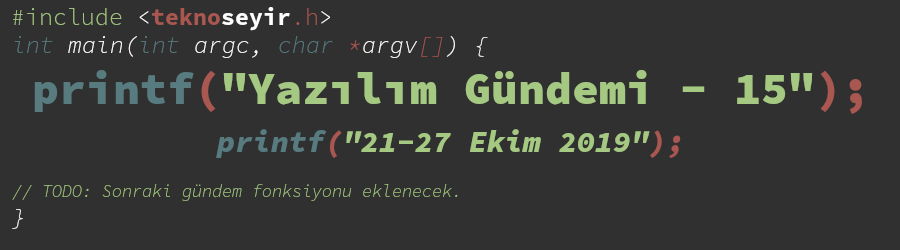
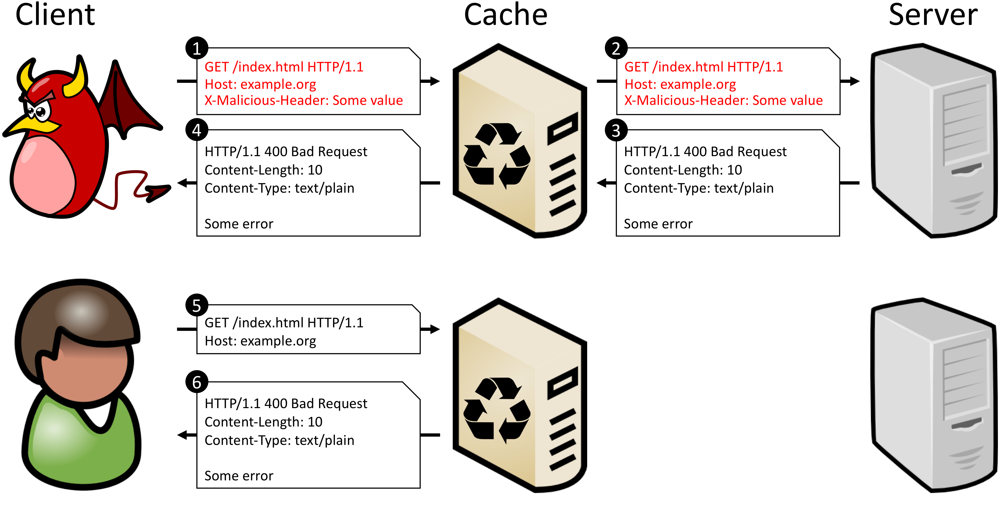
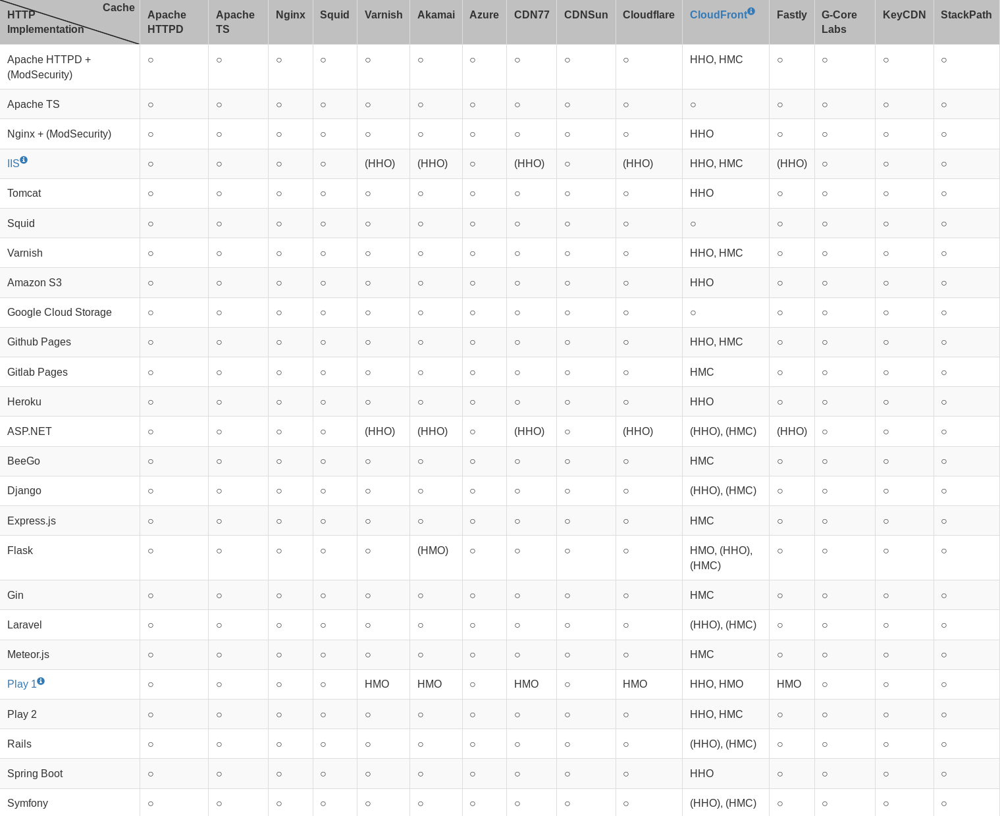
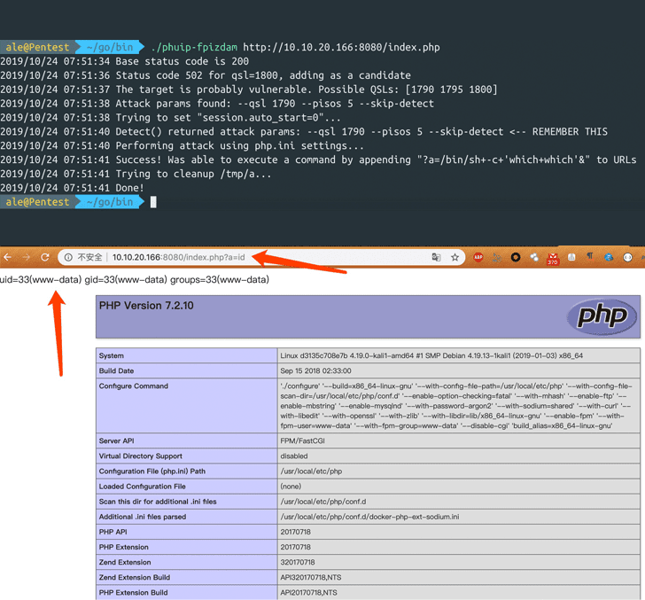
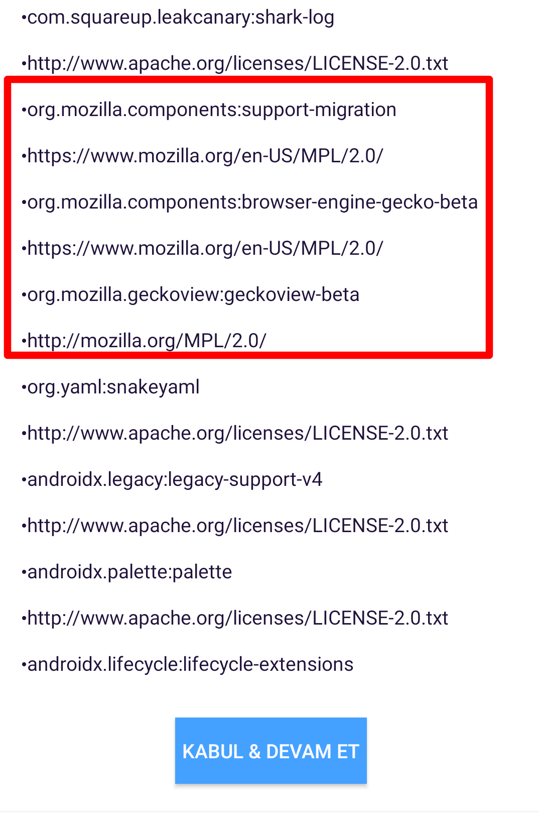
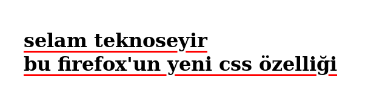

Yazılım Gündemi - 15
21-27 Ekim 2019
İçindekiler
- 1. Yeni bir önbellek zehirleme açığı ortaya çıktı: CPDoS
- 2. PHP-FPM'deki hata saldırganların uzaktan kod çalıştırmasına olanak sağlıyor
- 3. GitLab, hizmetlerine telemetri servisi eklemek istedi fakat vazgeçti
- 4. TypeScript 3.7 RC sürümü duyuruldu
- 5. Turkcell'in, Firefox Preview lisansını ihlal ettiği ortaya çıktı
- 6. Firefox 70 ile gelen yeni özellikler
- 7. Chrome 80 sürümünde
SameSite=None; Secureözelliği gelecek - 8. Yeni bir Qt aracı duyuruldu: Qt Design Viewer
- 9. Yaklaşan Etkinlikler
- 10. Diğer Haberler
- 11. Lisans

< Önceki Gündem | 21-27 Ekim 2019 | Sonraki Gündem >
1 Yeni bir önbellek zehirleme açığı ortaya çıktı: CPDoS
Gün geçmiyor ki yeni bir güvenlik açığı daha ortaya çıkmasın. Alman siber güvenlik araştırmacıları, bu hafta yayınladıkları "Your Cache Has Fallen: Cache-Poisoned Denial-of-Service Attack" başlıklı makaleleriyle yeni bir açığı ortaya çıkardı. Üstelik bu açıktan sektörde sıkça kullanılan Amazon CloudFront, Cloudflare, Akamai gibi CDN (Content Delivery Network) hizmetlerini de etkiliyor.

Şekil 2: CPDoS Açığı
Görselden yola çıkarak açığı açıklamak gerekirse:
- Saldırgan sitenin kabul etmediği bir HTTP Header bilgisiyle GET isteği
yapıyor. (Örn:
X-Zararli-Baslik: Deneme) - Önbellek sunucusu böyle bir isteği daha önce hafızasında tutmadığı için isteği gerçek sunucuya gönderiyor.
- Gerçek sunucu da böyle bir HTTP Header bilgisini kabul etmediği için önbellek sunucusuna hata mesajı gönderiyor.
- Önbellek sunucusu, gerçek sunucudan aldığı sayfayı aynen saldırgana gönderiyor.
- Normal kullanıcı siteye normal bir GET isteği gönderiyor.
- Önbellek sunucusu kullanıcıya yine hafızasındaki hata sayfasını gönderiyor.
Aslında bu açığın 3 tane de alt türü mevcut. Bunlar da şu şekilde:
- HTTP Header Oversize (HHO): HTTP isteğinin boyutunu aşırı yükselterek siteyi hata vermeye zorlama.
- HTTP Meta Character (HMC): HTTP isteğine zararlı karakter (
\n,\r,\agibi) ekleyerek siteyi hata vermeye zorlama. - HTTP Method Override (HMO): Sitenin kabul etmediği HTTP methodları (DELETE gibi) göndererek siteyi hata vermeye zorlama.
Açığın nasıl kullanıldığını gösteren bir videoyu bu adresten izleyebilirsiniz. Açıktan etkilenen web sunucu ve CDN hizmetlerinin listesi ise bu şekilde:

Şekil 3: Yukarıdaki açık türlerinin kısaltmaları bu tablodaki bir hücrede varsa o sistemde açık var demektir
Yalnız tabii ki de etik kurallar gereği bulunan açık önce etkilenebilecek firmalarla paylaşıldığı için çoğu web sunucusu ve CDN hizmeti sağlayan firmalar açıkları gidermiş durumda. Yani korkacak bir şey yok gibi gözüküyor.
Daha detaylı bilgi için konu başlığına eklediğim bağlantıdaki sayfayı ziyaret edebilirsiniz.
2 PHP-FPM'deki hata saldırganların uzaktan kod çalıştırmasına olanak sağlıyor
PHP-FPM (FastCGI Process Manager), normal PHP'deki FastCGI implementasyonuna alternatif daha gelişmiş ve yüksel verimlilik sunan bir işleyici. Fakat bu projedeki bir bellek hatası, diğer birkaç sorunla daha birleşince saldırganların sunucuda zararlı kod çalıştırabileceği bir güvenlik zafiyeti haline geliyor. Her ne kadar bu açığı meydana getiren koşulların bir araya gelmesi zor gözükse de güvenlik açığı sonuçta, ihmal etmeye gelmez.
Wallarm isimli şirkette güvenlik araştırmacısı olarak çalışan Andrew Danau tarafından ortaya çıkarılan bu açığı exploit edenler ise Omar Ganiev ve Emil Lerner.
Güvenlik zafiyetinin oluşabilmesi için gerekli koşullar ise şu şekilde:
- NGINX web sunucusunun PHP-FPM ile çalışması için ayarlanmış olması,
fastcgi_split_path_infodirektifinde ^ ile başlayan ve $ ile biten bir regex ifadesinin tanımlı olmasıPATH_INFOdeğişkenininfastcgi_paramdirektifi ile tanımlanması,- ve istenen dosyanın olup olmadığını kontrol eden herhangi bir ayarın olmaması,
NGINX'de şöyle ayarlar varsa:
location ~ [^/]\.php(/|$) { # ... fastcgi_split_path_info ^(.+?\.php)(/.*)$; fastcgi_param PATH_INFO $fastcgi_path_info; fastcgi_pass php:9000; # ... }
güvenlik zafiyeti de oluşmuş oluyor. Saldırgan da regex ifadesini bir şekilde maniple ederek bu bellek hatasını tetikliyor ve URL üzerinden istediği komutları çalıştırabilir hale geliyor.

Şekil 4: Görselde kullanılan exploit bu adreste yayınlanmış
PHP 7.3.11 ve PHP 7.2.24 sürümlerinde bu açıklar giderilmiş. Siz de sunucularınızdaki NGINX ayarlarınızı kontrol edin ve ilgili PHP güncellemelerini yapmayı ihmal etmeyin.
3 GitLab, hizmetlerine telemetri servisi eklemek istedi fakat vazgeçti
GitLab geçtiğimiz haftalarda yayınladığı bir blog yazısıyla kullanıcılara daha iyi hizmet verebilmek için GitLab.com ve ilgili servislerine telemetri (sayfayı ziyaret eden kullanıcıların davranışlarıyla ilgili raporlar hazırlayan servislere verilen isim) ekleyeceğini duyurmuştu. GitLab'ın bu girişimi, her ne kadar, "Eğer tarayıcınızın Do Not Track (DNT- Beni takip etme) ayarını kullanıyorsanız buna saygı göstereceğiz" ve "GitLab Community Edition'da böyle bir şey olmayacak" deseler bile geliştirici toplulukları tarafından hiç hoş karşılanmadı ve HackerNews ve Reddit gibi platformlarda tartışmalara yol açtı. Bunun üzerine GitLab'da ilgili blog yazısına bir güncelleme notu ekleyerek, bu değişikliklerden vazgeçtiklerini ve üzerine biraz daha çalışacaklarını duyurdular.
Bu konu hakkında siz ne düşünüyorsunuz? Hem bir geliştirici olarak hem de bir kullanıcı olarak telemetri servisleriyle ilgili genel görüşünüz nedir? Yorumlar kısmında konuşalım.
4 TypeScript 3.7 RC sürümü duyuruldu
Microsoft tarafından geliştirilen tip destekli JavaScript yazmayı sağlayan TypeScript dilinin bu hafta 3.7 RC sürümü duyuruldu. Daha önce yayınlanan planda dokümanında da belirtilen tarihten 2 gün sonra gerçekleşmiş olsa da her şey yolunda gözüküyor. TypeScript 3.7 ile gelecek iki özelliğe daha önceki gündem yazılarında değinmiştik (bkz: Yazılım Gündemi - 9). O yazıdaki özellikler haricinde yeni eklenen bir özelliğe daha göz atalım demek isterdim fakat ilgili blog yazısındaki "Assertion Functions" bölümünü okumama rağmen tam olarak anlayamadım, sanırım bunda uzun zamandır JavaScript yazmıyor olmamın da payı var.
Daha detaylı bilgi ve eklenen özelliklerle ilgili konu başlığına eklediğim bağlantıya tıklayabilirsiniz.
5 Turkcell'in, Firefox Preview lisansını ihlal ettiği ortaya çıktı
Turkcell'in geliştirdiği "yerli arama motoru" Yaani'nin, mobil cihazlar için geliştirdiği tarayıcısı, Firefox Preview'den forklanarak oluşturulmuş bir tarayıcı. Bunda bir sıkıntı yok. Firefox zaten açık kaynak kodlu ve özgür lisanslı bir uygulama, nitekim Tor Browser da Firefox'dan forklanmış. Fakat sorun Turkcell, Firefox Preview'in lisansı olan Mozilla Public License 2.0'ı ihlal etmesi. Yaani tarayıcısı açılırken bir kullanım sözleşmesi gösteriyor ve burada da MPL 2.0 lisansı listelenmiş fakat bu lisansın bir şartı olan kodların aynı lisans ile paylaşılması maddesi ihlal edilmiş (Madde 3.2). Turkcell, Yaani mobil uygulamasının kodlarını henüz hiçbir yerde paylaşmış değil. Konu Türkiye basınında hiç yer almadı, dolayısıyla Turkcell konuyla ilgili bir cevap da yayınlamış değil.

Şekil 5: Turkcell Yaani uygulamasının kullanım sözleşmesinde MPL 2.0 lisansı listelenmiş.
Konuyla ilgili siz ne düşünüyorsunuz diyeceğim ama pek şaşırdığınızı düşünmüyorum bu habere. Ben de şaşırmadım. Daha açık kaynak kullandığımız kodların lisanslarına bile saygı duymuyorken, Türkiye'den bir Google çıkmasını beklemek saçma olur diye düşünüyorum.
6 Firefox 70 ile gelen yeni özellikler
Bu hafta Firefox tarayıcısının 70 numaralı sürümü yayınlandı. Normal kullanıcıları ilgilendiren özelliklerin bir kısmını şuradaki paylaşımımda özetlemiştim. Şimdi de biz geliştiricileri ilgilendiren birkaç değişikliğe bakalım:
6.1 [CSS] Altı çizgili yazılar için yeni seçenekler
Artık altı çizgili yazılarımızı daha da özelleştirebileceğiz. Şöyle ki:
- text-decoration-thickness ile alt çizginin boyutunu değiştirebiliyoruz,
- text-underline-offset ile alt çizginin konumunu değiştirebiliyoruz,
- text-decoration-skip-ink ile de alt çizginin, harflerin kuyruklarından
geçerken çizilmemesini sağlayabilirsiniz. Bu özellik artık varsayılan
olarak
autoolacak.
Böyle kuru kuru olmadı gelin bir örnek yapalım:
<style> h1 { text-decoration: underline red; text-decoration-thickness: 3px; text-underline-offset: 6px; } </style> <h1>selam teknoseyir <br/> bu firefox'un yeni css özelliği</h1>
ve işte sonuç:

6.2 [JS] Numeric Separators
Türkçe'ye sanırım numara ayırıcılar olarak çevirebiliriz bu özelliği. Bu yeni özellik sayesinde artık JavaScript'de sayı değişkeni tanımlarken daha kolay okuyabilmek için bu şekilde sayıların basamaklarını ayırabileceğiz:
let sayi1=1_000_000; console.log(sayi1); // çıktı: 1000000
Öyle çok olmazsa olmaz bir özellik değil ama yine de faydalı.
İncelediğim iki özelliğin de diğer tarayıcılardaki desteklenme durumlarını kontrol etmek için eklediğim bağlantılardaki "Browser compatibility" bölümüne göz atabilirsiniz. Ayrıca diğer eklenen özellikler için de konu başlığına eklediğim bağlantıya tıklayabilirsiniz.
7 Chrome 80 sürümünde SameSite=None; Secure özelliği gelecek
Çerezler (cookies) hem güvenliklerinin sağlanması açısından hem de yönetimlerinin zor olması açısından geliştiricileri uğraştırmalarıyla ünlü yapılardır. Özellikle de Cross-Site Request Forgery (CSRF) olarak bilinen güvenlik zafiyeti, bir dönem her geliştiricinin korkulu rüyasıydı. Neyse ki tarayıcılardaki cookie özelliklerinin gelişmesiyle ve geliştiricilerin de bilinçlenmesiyle o günler geride kaldı.
Chromium takımı bu hafta yayınladıkları blog yazısı ile biz geliştiricileri
SameSite=None; Secure özelliğine hazır olmaya çağırıyor fakat bu özelliğin
neleri değiştirdiğinizi anlamak için önce Cross-Site ve Same-Site kavramlarına
bakmamız gerek.
Her cookie bir domain ile ilişkilendirilmiştir. Eğer bu domain ile tarayıcının
adres çubuğundaki domain farklı ise bu Cross-Site Cookie; aynı ise Same-Site
Cookie ismini alıyor. Cross-Site Cookie'ler ziyaret ettiğimiz bir çok web
sitesinin üçüncü parti olarak sitesine eklediği hizmetlerden (reklam,
istatistik vb.) gelebilir. Same-Site cookie'ler ise genellikle kullanıcıları
siteye giriş yapılmış tutmak (beni hatırla seçeneği) için kullanılır. Doğal
olarak bu Same-Site cookie'lere dışarıdan erişilmesini istemiyoruz. Bu noktada
kullanabileceğimiz iki ayar (SameSite=Lax ve SameSite=Strict) hali hazırda
zaten mevcut fakat artık Chrome aksi belirtilmediği sürece tüm cookie'leri
dışarıdan erişilmesi istenmeyen, yani Same-Site olarak değerlendirecek. Aksini
belirtmek için, yani cookie'yi Cross-Site yapmak için de SameSite=None;
Secure özelliğini kullanmamız gerekecek ve Cross-Site cookie kullanacak
sitelerin de artık HTTPS olmaları zorunlu olacak. Bu elbette cross-site
güvenlik tehditlerini tamamen ortadan kaldırmayacak ama ağ üzerinden yapılacak
manipülasyonların büyük oranda önüne geçmiş olacak.
2020 Şubat ayında yayınlanması planan Chrome 80 sürümüyle hayatımıza girecek olan bu değişikliğe hazır olmak için yapılması gerekenleri şu şekilde sıralamış Google:
- Bazı dillerde ya da kütüphaneler henüz
Nonedeğerini desteklemiyor olabilir. Böyle bir durumda cookie header bilgisine kendiniz eklemeniz gerekecek. Bazı dil ve kütüphanelerde bunun nasıl yapılacağını anlatan şöyle bir depo hazırlamış Google: https://github.com/GoogleChromeLabs/samesite-examples - Bazı tarayıcılar ya da tarayıcıların eski versiyonları
Nonedeğerini desteklemiyor olabilir. Uyumsuz istemciler listesine buradan bakabilirsiniz: https://www.chromium.org/updates/same-site/incompatible-clients - Diğerleri için konu başlığına eklediğim bağlantıdaki blog yazısının "How to Prepare; Known Complexities" bölümüne bakabilirsiniz.
Ayrıca bu davranışı test etmek için Chrome 76 ve yukarısındaki sürümler için chrome://flags adresinden "SameSite by default cookies" ve "Cookies without SameSite must be secure" ayarlarını açabilirsiniz.
Same-Site Cookie'lerle ilgili daha detaylı bilgi için bu adresi ziyaret edebilirsiniz.
8 Yeni bir Qt aracı duyuruldu: Qt Design Viewer
Qt for WebAssembly üzerinde geliştirilen bu araç sayesinde artık QML uygulamaları tarayıcı üzerinde çalıştırılabilecek. Eğer tarayıcınızda WebAssembly desteği varsa buraya tıklayarak ilgili aracı kullanabilirsiniz. Benim gibi Qt sistemine uzak birisiyseniz de Examples kısmındaki hazır dosyalardan birisi seçerek aracı inceleyebilirsiniz.
9 Yaklaşan Etkinlikler
| Etkinlik İsmi | Yeri | Tarihi |
|---|---|---|
| Hacktoberfest - JSAntalya | Antalya | 28 Ekim 19:00 |
| DevOps'u Keşfedelim | İstanbul | 31 Ekim 19:00 |
| Secure Front-end Development | İstanbul | 31 Ekim 19:30 |
| Hello World (Full Stack Ankara) | Ankara | 1 Kasım 19:00 |
| Ruby Türkiye Buluşması - 6 | İstanbul | 2 Kasım 13:00 |
| Developers Meeting Coffee&Talk | Antalya | 2 Kasım 15:00 |
10 Diğer Haberler
- Windows Terminal Preview 1910 duyuruldu.
- Microsoft, PowerShell 7 Preview 5 sürümü duyurudu.
- Netflix'den açık kaynaklı Jupyter Notebook alternatifi: Polynote. GitHub Deposu.
- Netflix, Mantis isimli gerçek-zamanlı akış işleme uygulamaları için geliştirdiği platformu açık kaynak yaptı. GitHub Deposu.
- GitHub Education Classroom Raporu yayınlandı.
- Google'dan, araştırmalar için Haskell ailesine yeni bir dil: Dex.
- Unity, mimarlar için yeni bir açık kaynak araç geliştiriyormuş.
- Electron 7.0.0 duyuruldu.
- NodeJS 13.0.0 ve 13.0.1 yayınlandı.
- Ruby programlama dilinin 2.7.0-preview2 sürümü yayınlandı.
- Elm programlama dilinin 0.19.1 sürümü yayınlandı, yükseltme rehberi.
- Firefox Preview sürümüne GeckoView desteği eklendi.
- Emscripten, güncel LLVM sürümüne geçtiğini duyurdu. Pull Request
- Material Components Android kütüphanesinin 1.2.0-alpha01 sürümü yayınlandı.
- Qt 3D kütüphanesinin 5.14 sürümü yayınlandı.
11 Lisans

Yazılım Gündemi - 15 yazısı Eren Hatırnaz tarafından Creative Commons Atıf-GayriTicari-AynıLisanslaPaylaş 4.0 Uluslararası Lisansı (CC BY-NC-SA 4.0) ile lisanslanmıştır.